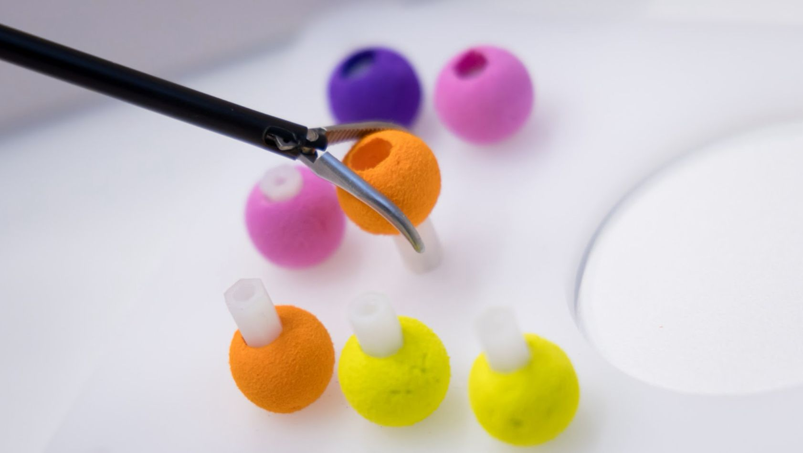

Recent Projects
Our work at a glance.

Skillslab
A place for those that want to improve their skills in field of surgery and 3D printing.
Completed Projects
Selected projects that have been presented or published.
Peer-Taught Laparoscopy Curriculum
A laparoscopic training curriculum designed and taught by students for fellow students. Evaluated with 86 medical students, it showed high participant satisfaction and serves as a gateway to surgical careers.
Innovative Surgical Sciences
Read more →
Appendectomy Training on Self-Made 3D Models
A laparoscopic curriculum for students and residents based on self-made 3D models, teaching the surgical milestones of appendectomy step by step.
Read more →
DERMA – Self-Made Suture Pads
Dermal Engineering and Reproducible Material Applications: self-made suture pads for realistic suturing practice, evaluated in a cost analysis and feasibility study.
Read more →
Venipuncture Trainer
A novel simulation-based trainer for practising peripheral venipuncture.
Read more →
3D-Printed Microsurgery Curriculum
A sustainable curriculum using 3D-printed, silicone-based models to train microsurgical skills in undergraduate medical education, with modules on dexterity, suturing and anastomosis.
Read more →
Open-Source Uterus Model
A self-designed anatomical uterus model for medical training and procedural simulation, openly available for 3D printing.
Read more →
All publications and talks: SimLab on ResearchGate